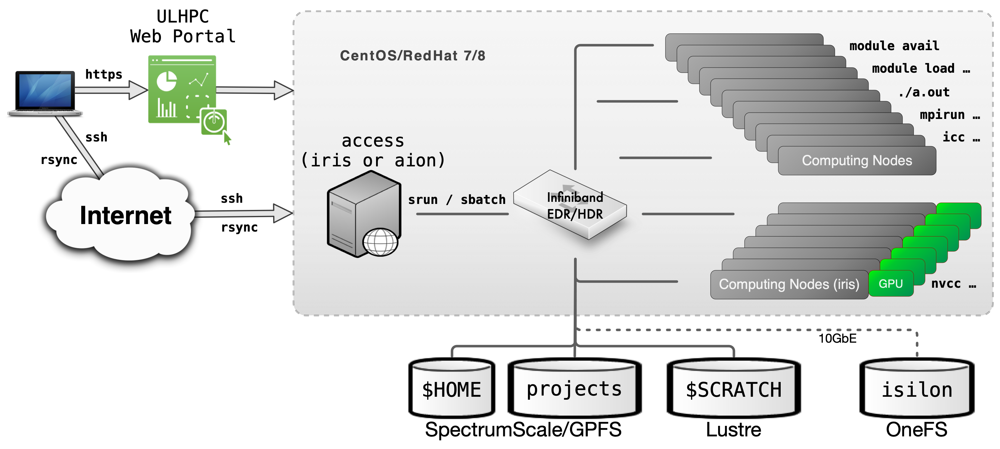
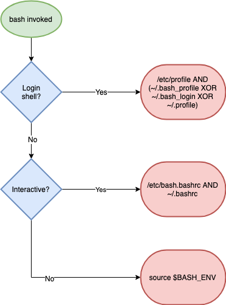

ULHPC User Environment¶
Your typical journey on the ULHPC facility is illustrated in the below figure.

Typical workflow on UL HPC resources
You daily interaction with the ULHPC facility includes the following actions:
Preliminary setup
- Connect to the access/login servers
- This can be done either by
ssh(recommended) or via the ULHPC OOD portal - (advanced users) at this point, you probably want to create (or
reattach) to a
screenortmuxsession
- This can be done either by
- Synchronize you code and/or transfer your input
data using
rsync/svn/gittypically- recall that the different storage filesystems are shared (via a high-speed interconnect network) among the computational resources of the ULHPC facilities. In particular, it is sufficient to exchange data with the access servers to make them available on the clusters
- Reserve a few interactive resources with
salloc -p interactive [...]- recall that the
modulecommand (used to load the ULHPC User software) is only available on the compute nodes - (eventually) build your program, typically using
gcc/icc/mpicc/nvcc.. - Test your workflow / HPC analysis on a small size problem (
srun/python/sh...) - Prepare a launcher script
<launcher>.{sh|py}
- recall that the
Then you can proceed with your Real Experiments:
- Reserve passive resources:
sbatch [...] <launcher> - Grab the results and (eventually) transfer back your output
results using
rsync/svn/git
For more information:
'-bash: module: command not found' on access/login servers
Recall that by default, the module command is (on purpose) NOT available on the access/login servers.
You HAVE to be on a computing node (within a slurm job)
Home and Directories Layout¶
All ULHPC systems use global home directories. You also have access to several other pre-defined directories setup over several different File Systems which co-exist on the ULHPC facility and are configured for different purposes. They are listed below:
| Directory | Env. | file system | backup | purging |
|---|---|---|---|---|
/home/users/<login> |
$HOME |
GPFS/Spectrumscale | yes | no |
/work/projects/<name> |
- | GPFS/Spectrumscale | yes | no |
/scratch/users/<login> |
$SCRATCH |
Lustre | no | yes |
/mnt/isilon/projects/<name> |
- | OneFS | yes* | no |
Shell and Dotfiles¶
The default login shell is bash -- see /etc/shells for supported shells.
ULHPC dotfiles vs. default dotfiles
The ULHPC team DOES NOT populate shell initialization files (also known as dotfiles) on users' home directories - the default system ones are used in your home -- you can check them in /etc/skel/.* on the access/login servers.
However, you may want to install the ULHPC/dotfiles available as a Github repository. See installation notes.
A working copy of that repository exists in /etc/dotfiles.d on the access/login servers. You can thus use it:
$ /etc/dotfiles.d/install.sh -h
# Example to install ULHPC GNU screen configuration file
$ /etc/dotfiles.d/install.sh -d /etc/dotfiles.d/ --screen -n # Dry-run
$ /etc/dotfiles.d/install.sh -d /etc/dotfiles.d/ --screen # real install
Changing Default Login Shell (or NOT)
If you want to change your your default login shell, you should set that up using the ULHPC IPA portal (change the Login Shell attribute).
Note however that we STRONGLY discourage you to do so. You may hit unexpected issues with system profile scripts expecting bash as running shell.
System Profile¶
/etc/profile contains Linux system wide environment and startup programs.
Specific scripts are set to improve your ULHPC experience, in particular those set in the ULHPC/tools repository, for instance:
- /etc/profile.d/slurm-prompt.sh: provide info of your running Slurm job on your prompt
- /etc/profile.d/slurm.sh: several helper function to
Customizing Shell Environment¶
You can create dotfiles (e.g., .bashrc, .bash_profile, or
.profile, etc) in your $HOME directory to put your personal shell
modifications.
Custom Bash Initialisation Files
On ULHPC system ~/.bash_profile and ~/.profile are sourced by login
shells, while ~/.bashrc is sourced by most of the shell invocations
including the login shells. In general you can put the environment
variables, such as PATH, which are inheritable to subshells in
~/.bash_profile or ~/.profile and functions and aliases in the
~/.bashrc file in order to make them available in subshells.
ULHPC/dotfiles bash
configuration
even source the following files for that specific purpose:
~/.bash_private: custom private functions~/.bash_aliases: custom private aliases.
Understanding Bash Startup Files order
See reference documentation. That's somehow hard to understand. Some tried to explicit it under the form of a "simple" graph -- credits for the one below to Ian Miell (another one)

This explains why normally all ULHPC launcher
scripts start with
the following sha-bang (#!)
header
#!/bin/bash -l
#
#SBATCH [...]
[...]
/bin/bash -l instead of the
classical /bin/bash) to ensure that /etc/profile is sourced natively,
and thus that all ULHPC environments variables and modules are loaded.
If you don't proceed that way (i.e. following the classical approach), you
MUST then use the following template you may see from other HPC centers:
#!/bin/bash
#
#SBATCH [...]
[...]
# Load ULHPC Profile
if [ -f /etc/profile ]; then
. /etc/profile
fi
Since all ULHPC systems share the Global HOME filesystem,
the same $HOME is available regardless of the platform.
To make system specific customizations use the pre-defined environment
ULHPC_CLUSTER variable:
Example of cluster specific settings
case $ULHPC_CLUSTER in
"iris")
: # Settings for iris
export MYVARIABLE="value-for-iris"
;;
"aion")
: # settings for aion
export MYVARIABLE="value-for-aion"
;;
*)
: # default value for
export MYVARIABLE="default-value"
;;
esac

Operating Systems ¶

The ULHPC facility runs RedHat-based Linux Distributions, in particular:
- the Iris cluster run CentOS and RedHat (RHEL) Linux operating system, version 7
- the Aion cluster run RedHat (RHEL) Linux operating system, version 8

- Experimental Grid5000 cluster run Debian Linux, version 10
Thus, you are more than encouraged to become familiar - if not yet - with Linux commands. We can recommend the following sites and resources:
Impact of CentOS project shifting focus starting 2021 from CentOS Linux to CentOS Stream
You may have followed the official announcement on Dec 8, 2020 where Red Hat announced that it will discontinue CentOS 8 by the end of 2021 and instead will focus on CentOS Stream going forward. Fortunately CentOS 7 will continue to be updated until 2024 and is therefore not affected by this change.
While CentOS traditionally has been a rebuild of RHEL, CentOS Stream will be more or less a testing ground for changes that will eventually go into RHEL. Unfortunately this means that CentOS Stream will likely become incompatible with RHEL (e.g. binaries compiled on CentOS Stream will not necessarily run on RHEL and vice versa). It is also questionable whether CentOS Stream is a suitable environment for running production systems.
For all these reasons, the migration to CentOS 8 for Iris (initially planned for Q1 2021) has been cancelled. Alternative approaches are under investigation, including an homogeneous setup between Iris and Aion over Redhat 8.
Discovering, visualizing and reserving UL HPC resources¶
See ULHPC Tutorial / Getting Started
ULHPC User Software Environment¶
The UL HPC facility provides a large variety of scientific applications to its user community, either domain-specific codes and general purpose development tools which enable research and innovation excellence across a wide set of computational fields. -- see software list.

We use the Environment Modules / LMod framework which provided the module utility on Compute nodes
to manage nearly all software.
There are two main advantages of the module approach:
- ULHPC can provide many different versions and/or installations of a single software package on a given machine, including a default version as well as several older and newer version.
- Users can easily switch to different versions or installations
without having to explicitly specify different paths. With modules,
the
MANPATHand related environment variables are automatically managed.
ULHPC modules are in practice automatically generated by Easybuild.

EasyBuild (EB for short) is a software build and installation framework that allows you to manage (scientific) software on High Performance Computing (HPC) systems in an efficient way. A large number of scientific software are supported (at least 2175 supported software packages since the 4.3.2 release) - see also What is EasyBuild?.
For several years now, Easybuild is used to manage the ULHPC User Software Set and generate automatically the module files available to you on our computational resources in either prod (default) or devel (early development/testing) environment -- see ULHPC Toolchains and Software Set Versioning.
This enables users to easily extend the global Software Set with their own local software
builds, either performed within their global home
directory or (better) in a shared project
directory though Easybuild, which generate automatically module files compliant with the ULHPC module setup.
ULHPC Environment modules Using Easybuild on ULHPC Clusters